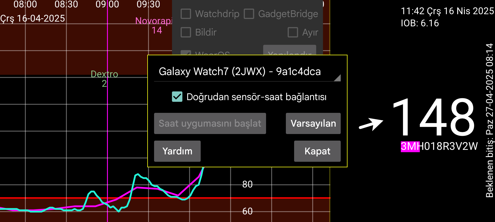

ar be de es fr it nl pl pt ru tr uk zh en
Doğrudan sensör-saat bağlantısı: Bu, saatin sensöre doğrudan bağlanıp bağlanmaması gerektiğini belirler. Bu yalnızca saat ve telefon senkronize olduğunda değiştirilebilir. Telefon ve saat üzerinde Klon > Eşle ve Yeniden Başlat'ı kullanarak telefon ve saati senkronize edin.
Saat uygulamasını yeniden başlat: Juggluco, WearOS saatinize yüklendikten ve çalışmaya başladıktan sonra bu düğmeye bir kez basılmalıdır.
Varsayılanlar: Bağlantı ayarlarını varsayılan değerlere döndürür. Saatin Sol Menü > Klon 'da ve telefonun Orta Sol Menü > Klon 'da değiştirilebilen ayarlarla ilgilidir. "Yalnızca Etkin" ve "Taramalar” gibi ayarlardan oluşur. Ayarlar kazara veya uyku sırasında değiştiğinde bu düğmeye basılabilir. Saat sürümünü yeniden yükleyerek veya verileri temizleyerek sıfırlarsanız telefondaki klon bağlantısını da kaldırmanız gerekir.
Juggluco'nun özel bir versiyonu doğrudan bir Wear OS saatinde çalışabilir. Sensörü taramak için NFC'li bir Android telefona ihtiyaç duyar ve bu veriler bir TCP bağlantısı aracılığıyla Wear OS saatine gönderir. Bundan sonra iki olasılık vardır:
Sensör telefonla bağlantıda kalır ve telefon Bluetooth aracılığıyla aldığı her glikoz değerini TCP aracılığıyla Wear OS saatine gönderir.
Sensörü doğrudan Wear OS saatine bağlamak da mümkündür. Bunun için iyi Bluetooth bağlantısına sahip bir Wear OS saate ihtiyacınız var.
Bazı resimler şu adreste gösterilmektedir: https://www.juggluco.nl/JugglucoWearOS
Çalışmasını sağlamak için aşağıdakileri yapınız:
Saatinizde ve telefonunuzda hem Bluetooth hem de WIFI'nin çalıştığından emin olun,
Saatin yeterli boş depolama alanı ve RAM'e sahip olduğundan emin olun. Kritik bir anda cihazın depolama alanı biterse Juggluco'nun yeniden yüklenmesi gerekebilir,
Juggluco'nun telefon versiyonunu sensörle çalışır hale getirin. "Bluetooth üzerinden Sensör" ayarıyla sensörü birkaç kez taramanız gerekir,
Juggluco'nun Wear OS sürümünü saatinize Yükleyin ve başlatın,
Telefonda, Sol Menü > Saat > Wear OS Yapılandır. Saatiniz seçicide görüntülenmelidir. "Saat uygulamasını başlat" tuşuna basın,
Her şey yolunda giderse, her iki Juggluco'da da bir TCP bağlantısı yapılandırılır ve telefondaki tüm veriler saate gönderilir. Juggluco'yu uzun süre kullanıyorsanız bu uzun sürebilir, bu nedenle çok fazla veri gönderilmesi gerekir. TCP bağlantısının yapılandırılıp yapılandırılmadığını klon iletişim kutusuna bakarak kontrol edebilirsiniz (telefon: Orta Sol Menü > Klon, saat: Sol Menü > Klon). Saatiniz için seçicide gösterilenle aynı kimliğe sahip bir bağlantı gösterilmelidir. Saatte ayrıca telefonun IP'si de bulunmalıdır. Bunlar yoksa veya saat tarafı bir IP içermiyorsa, tekrar "Saat uygulamasını başlat"a basın. Hala yoksa, Bluetooth bağlantısını ve saatinize bağlantıdan sorumlu telefon uygulamasını kontrol edin. Saat zaten veri almışsa, "Saat uygulamasını başlat"a basmak tüm verileri yeniden gönderme etkisine sahiptir, bu nedenle Juggluco'nun saat sürümünü yeniden yükleyebilirsiniz. Daha sonra, doğru IP gösterilmiyorsa, telefonda harici bağlantıyı (WIFI veya Mobil veri) kapatıp açmalısınız.
Her şey yolunda giderse, Juggluco'nun telefon versiyonunda görüntülenen veriler, Juggluco'nun saat versiyonunda da görüntülenir. Telefon tarafından alınan her yeni glikoz değeri TCP aracılığıyla saate gönderilir. Ünite, glikoz alarm seviyeleri ve hatırlatıcılar gibi bazı ayarlar da saate iletilir. Daha sonra saatin üzerinde değişiklikler yapılmalıdır.
İyi Bluetooth bağlantısı olan bir saatiniz varsa ve telefonunuzu taşımak zorunda kalmadan saatinizde glikoz değerlerini almak istiyorsanız, Juggluco'nun saat versiyonunu doğrudan sensöre bağlayabilirsiniz. Tüm değerler saate gönderildikten sonra, "Doğrudan sensör-saat bağlantısı"'nı kontrol edebilirsiniz. Bununla, "Bluetooth üzerinden sensör" telefonda kapatılır ve saatte açılır. Akış değerleri artık saatinizden telefona gönderilir, bunu Klon iletişim kutusundan kontrol edebilirsiniz. Saat ve telefon senkronize olmadığında "Doğrudan sensör-saat bağlantısı"'nı değiştiremezsiniz.
Saatten telefona miktarları göndermek istiyorsanız, telefondaki klon iletişim kutusunda, işareti kaldırıp saatte işaretleyerek gönderme yönünü tersine çevirmelisiniz. Telefonda da "Gelen" ayarı yapılmalıdır. Her şey tam olarak doğru ayarlanmamışsa, çalışmaz. "Miktarları değiştirme" işareti değiştirilmelidir. Miktarların etiketleri her zaman miktarlarla birlikte gönderilir. Saatten telefona miktarların iletim yönünü değiştirirseniz, etiketleri değiştiremezsiniz.
Sensörün saatle doğrudan Bluetooth bağlantısı varsa ve değerler bir telefona gönderiliyorsa, taranan değerler telefondan saate de gönderilmeli ve akış değerleri sensör Juggluco ile taranmadan önce senkronize edilmelidir (ayarlar otomatik olarak bu şekilde yapılandırılır.) Aksi takdirde, eski değerler saate geri gönderilebilir veya değiştirilen kimlik doğrulama bilgileri saate gönderilmez ve bu da Kilit açma anahtarı hatalarına neden olur.
Bağlantıdaki değişiklikler de yalnızca veriler senkronize olduğunda yapılmalıdır. Telefon ve saatteki veriler tam kopyalar olmalıdır (tüm miktar verilerini çıkarabilmeniz istisnadır).
Telefondan saate ilk bağlantıda çok fazla veri aktarılması gerektiğinde, saati şarj cihazına bağlayabilirsiniz. Benim saatim şarj cihazına bağlandığında WIFI'yi açıyor.
Saat-telefon bağlantısı, Juggluco çalıştıran telefonlar ile Juggluco sunucusu çalıştıran bilgisayarlar arasında yapılandırabileceğiniz klon bağlantısının bir uyarlamasıdır. Telefon ve saat arasındaki bağlantı yukarıda açıklanan şekilde otomatik olarak oluşturulduğunda, aşağıdaki eklemelere sahiptir:
Bağlantının diğer tarafının IP'si otomatik olarak belirlenir. Normalde klon bağlantısıyla doğrudan bir şey yapmanız gerekmez. Bunun yerine ayarları değiştirmek için Sol Menü→Saat→WearOS Yapılandırmasını kullanabilirsiniz. İstisna, saate sayılar girmek istediğiniz zamandır. O zaman Saatte gir altında açıklandığı gibi klon ayarlarını manuel olarak değiştirmeniz gerekir.
Telefon ile saat arasındaki WIFI bağlantısı çalışmıyorsa, Juggluco Bluetooth üzerinden TCP kullanımına geçer. Saatin ilk kullanımında saate çok fazla veri gönderilmesi gerekmediği sürece, saatin WIFI özelliğini kapatabilirsiniz.
Telefondaki Juggluco ile saat arasında veri alışverişi olmadığında aşağıdakileri kontrol edebilirsiniz:
Saatte ve telefonda Bluetooth açık olmalıdır (WIFI kapatılabilir),
Saatin eşlik eden uygulaması saatin telefona bağlı olduğunu göstermelidir,
Saatte Sol Menü→Klon ve telefonda Orta Sol Menü→Klon saatin tanımlayıcısıyla otomatik olarak oluşturulmuş bir bağlantı girişi olmalıdır. (telefonda Sol Menü→Saat→"WearOS Yapılandır"da görüntülenen tanımlayıcıyla aynı)
Saat üzerindeki Sol Menü →Klon'da Yeniden Başlat ve/veya Eşle'ye basmak yardımcı olabilir,
Bazen aynısını telefonda yapmanız gerekir. Daha sonra aynısını saatte tekrar yapmanız gerekebilir,
Telefon veya saatinizde Bluetooth'u kapatıp açmak yardımcı olabilir. Bundan sonra saatinizde Yeniden Başlat ve Eşle'ye tekrar basmanız gerekir,
Aynısını WIFI veya mobil veri ile yapmak gerekebilir,
Bazen Bluetooth'un tekrar çalışması için telefonun ve/veya saatin yeniden başlatılması gerekir,
Klon bağlantısındaki ayarların bir şekilde yanlış değerlerle değiştirilmiş olması mümkündür. Telefonda Sol Menü→Saat→”WearOS Yapılandırması”→Varsayılan'a basarak bunları orijinal değerlere sıfırlayabilirsiniz. Bu ayrıca sensörün saat yerine telefona bağlanması etkisine sahiptir. Yalnızca saatte bulunan veriler geçersiz kılınacaktır,
Eğer tüm bunlar başarısız olursa, saat sürümünü yeniden yükleyebilir ve baştan başlayabilirsiniz. Bu durumda, Orta Sol Menü→Klon altında mevcut saat bağlantısını kaldırmanız gerekir.
Eğer bir şekilde veriler telefonda eksikse ama saatte mevcutsa, bu çok daha zordur. Bir şekilde önce telefondaki verileri almak için çalışan bir klon bağlantısı oluşturmanız gerekir.
Saatten insülin, karbonhidrat ve aktivite miktarlarını girerseniz, artık bunu telefonda yapamazsınız. Ayrıca insülin kalemlerinin taranması artık mümkün değildir.
Şu anda bunun için tek bir düğme yok. Saat ile eşlik eden telefon arasındaki klon bağlantısının her iki tarafında, klon ayarlarında değişiklik yapmanız gerekir. Önce telefon ve saatin senkronize olduğundan emin olun, sonra aşağıdakileri yapın:
Orta Sol Menü→Klon→Saat bağlantısına ve sonra Değiştir'e basın. Miktarlar'ı kaldırın ve Gelen 'in işaretli olduğunu görün. Bundan sonra “Kaydet”e ve sonra “Kapat”a basın. “Ayna miktarları gönderir”i seçin.
Sol Menü→Klon→Saat bağlantısına ve ardından Değiştir'e basın. “Miktarlar”ı ayarlayın. “Şimdi”yi tüm verilerin telefonda zaten mevcut olduğu zaman noktası olarak ayarlayın. Bundan sonra “Kaydet” ve ardından “Kapat”a basın. “Ayna miktarları gönderir” ayarını kaldırın.
Wear OS için Juggluco, mevcut glikoz seviyenizi saat ve dört komplikasyona kadar gösteren bir saat yüzü içerir. Bunu kullanmak için saat eşlikçi uygulamasında "indirilen" altında bu saat yüzünü seçmeniz gerekir. Normalde, ekran uyandığında son glikoz değerini görürsünüz. Ekran (her zaman açık) modunda olduğunda, glikoz değeri yalnızca dakika göstergesi yükseltildiğinde, bir düğmeye bastığınızda veya kolunuzu kaldırdığınızda güncellenir. Bu nedenle, görüntülenen değer bir dakikaya kadar gecikebilir. Saat yüzü bazı yeni saatlerde (örneğin Samsung Galaxy Watch 7 ve Watch Ultra) kullanılamaz çünkü pil ömrünü korumak için programlanmış saat yüzlerine izin vermezler.
Juggluco 8.2.0 ve üzeri, WearOS 5 altında da kullanılabilen bir glikoz değeri, glikoz oku ve ok+değer komplikasyonu içerir. Bu, küçük veya büyük görüntü komplikasyon yuvasını kabul eden her saat yüzüyle kullanılabilir.
Juggluco'nun saat ayarlarında Yüzen Glikoz'u açmak için üçüncü bir seçenek vardır. Juggluco doğru izinlere sahip olduğunda, diğer uygulamaların üzerinde bir glikoz değeri görüntülenir. Bu şekilde, rastgele saat yüzlerini veya uygulamaları kullanırken mevcut glikoz değerinizi görebilirsiniz. Daha fazla bilgi için Juggluco'nun telefon sürümünde, Sol Menü > Ayarlar > Yüzen glikoz > Yardım'a bakın.
Eşlik eden uygulamadan, Orta Sol Menü→Klon altında açıklandığı gibi internet üzerinden diğer cihazlara tekrar gönderebilirsiniz. Ayrıca saati doğrudan internet üzerindeki bir sunucuya ve oradan da şu adreste açıklandığı gibi bir takipçi telefonuna bağlamak da mümkündür: https://www.juggluco.nl/Juggluco/cmdline/watch